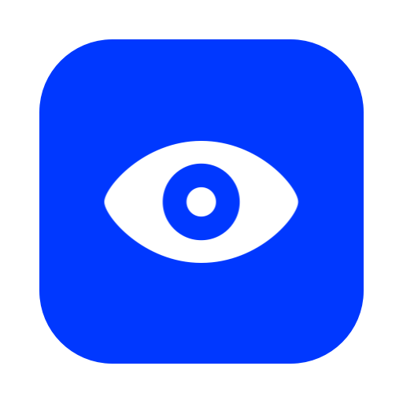

AgentWatcher
Keeps your Mac awake while AI coding agents work, with the lid closed too, and lets it sleep when they're done.
Download for Macbrew install --cask abdul10ahad/tap/agentwatcher
Awake while agents work
Claude Code, Codex, Cursor and Gemini CLI. It watches for agents that are actually working, not just open. No setup.
Lid closed too
Close the lid and the work goes on with the screen dark. When it's done, your Mac goes to sleep.
Lets go on its own
It stops holding your Mac awake when it gets hot or the battery runs low, so a Mac in a bag stays safe.
Or by hand
Click the eye in the menu bar to keep it awake for 15 minutes, a few hours, or until you turn it off.